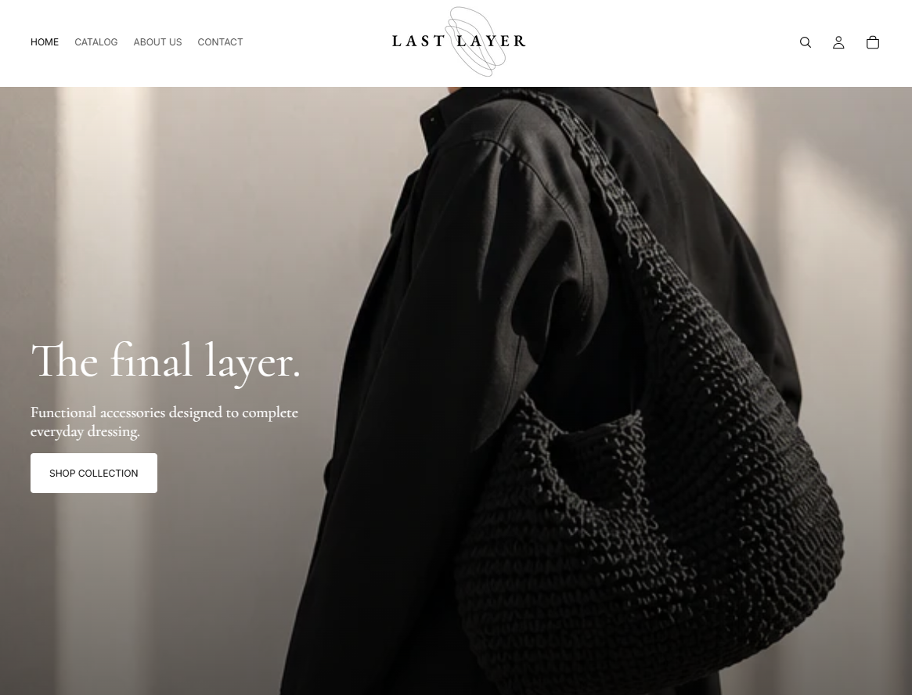
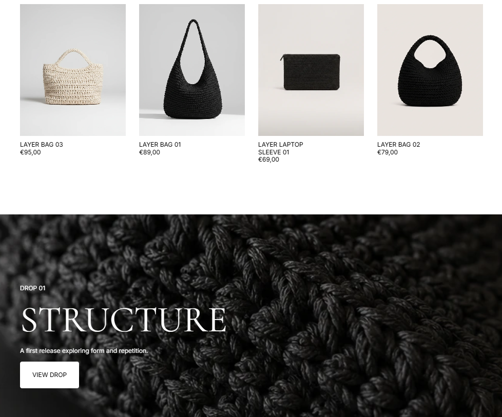

Last Layer - verkkokauppa
Kuvaus
Suunnittelin ja toteutin konseptipohjaisen Shopify-verkkokaupan “Last Layer”, joka keskittyy asusteisiin pukeutumisen viimeisenä kerroksena. Projektin lähtökohtana oli rakentaa kuratoitu ja visuaalisesti yhtenäinen kokonaisuus, jossa tuotteet esitetään selkeästi ja kaupallisesti.
Verkkokauppa rakentuu minimalistisen estetiikan, materiaalilähtöisen suunnittelun ja kampanja-ajattelun ympärille. Toteutin sivustolle myös erillisen “drop”-kokonaisuuden, jossa valittu osa tuotteista esitetään kuratoituna julkaisuna omalla sivullaan.
Keskeiset ominaisuudet
- Shopify-verkkokauppa kuratoidulle asustevalikoimalle
- Selkeä ja minimalistinen käyttöliittymä, jossa korostuu tuotteiden esillepano
- Drop-malliin perustuva kampanjasivu (DROP 01), joka kokoaa tuotteet yhdeksi visuaaliseksi kokonaisuudeksi
- Yhtenäinen brändi-ilme ja visuaalinen linja koko sivustolla
- Tuotesivujen rakenne optimoitu selkeään ja nopeaan käyttökokemukseen
Opitut asiat
Projekti kehitti osaamistani erityisesti Shopify-verkkokaupan rakenteen suunnittelussa ja sisällöntuotannossa. Opin rakentamaan verkkokauppaan selkeän hierarkian (etusivu, katalogi, kampanjasivut) sekä hyödyntämään kampanja-ajattelua tuotteiden esillepanossa.
Lisäksi syvensin ymmärrystäni brändilähtöisestä suunnittelusta ja siitä, miten visuaalinen ilme, tekstit ja rakenne muodostavat yhtenäisen asiakaskokemuksen.

